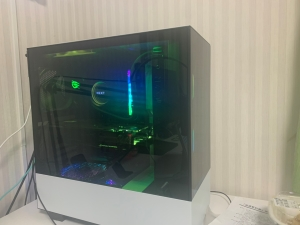
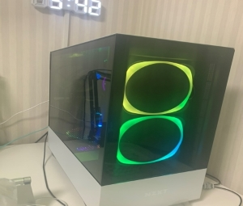

画像

自作パソコンとは、ユーザー自身がパソコン用の部品（マザーボード、CPU、メモリ、電源、ハードディスクやソリッドステートドライブ(SSD)、光学ドライブ、各種拡張カード、それらをおさめるケースなど）を自身で調達し、組み立てた物のことである。
「自作パソコン」という用語・概念は、主に大手コンピューターメーカーや電機メーカーなどによって製造されたメーカーブランドのパソコン、組み立て済みの状態で販売されているパソコンと対比する意味で用いられる。
自作パソコンにはユーザー自身の好みで仕様（スペック）を決められる、（使い始めた後でも）個々の部品ごとに好みでアップグレード（さらに高性能・高機能な部品に交換できる）できるなどのメリットがある。